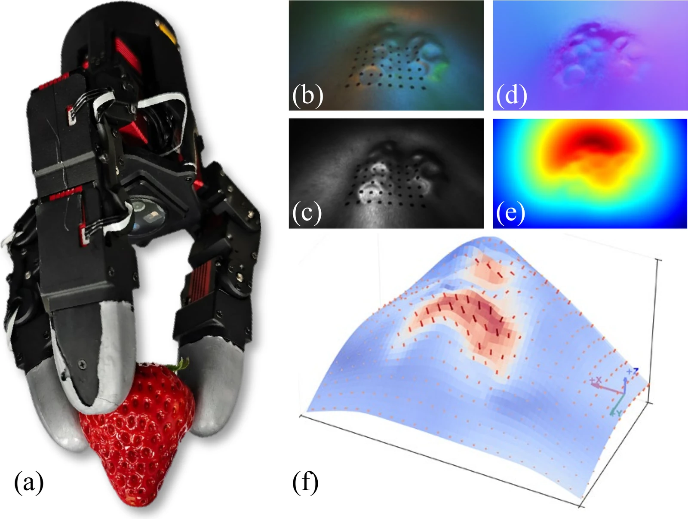
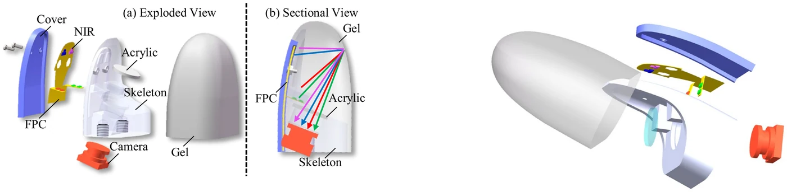
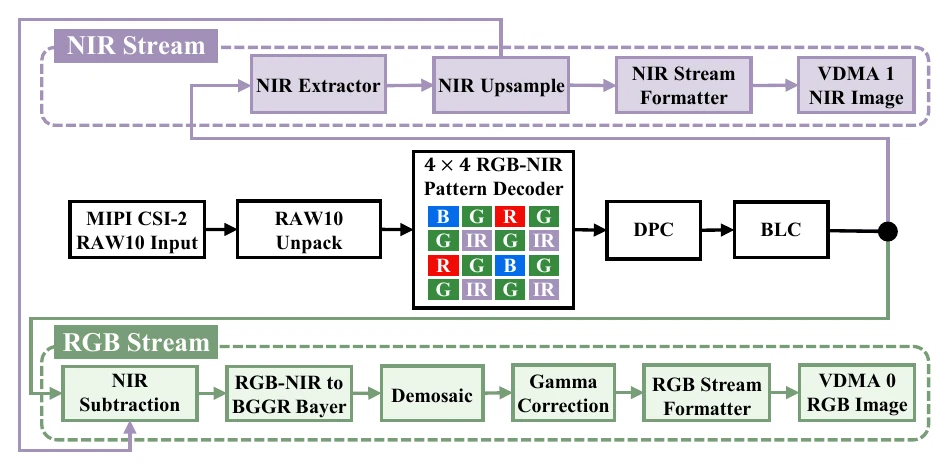
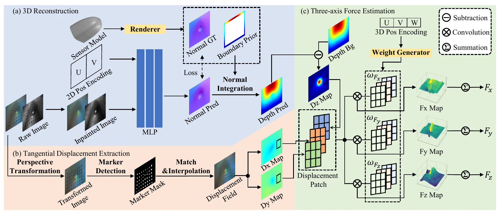
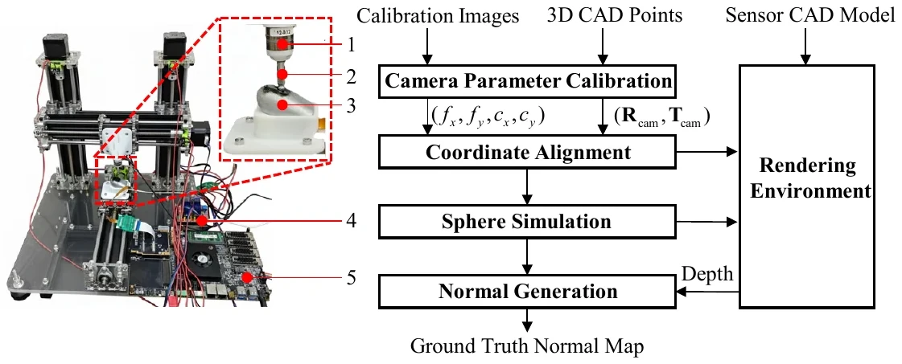
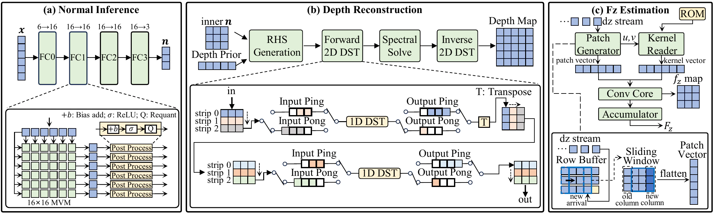
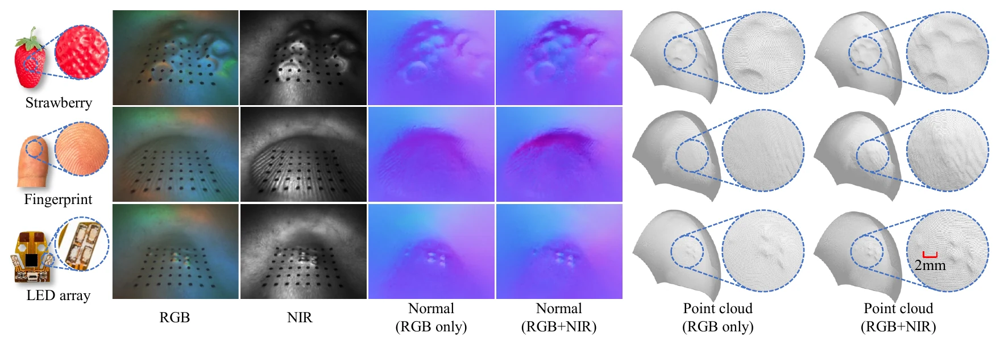
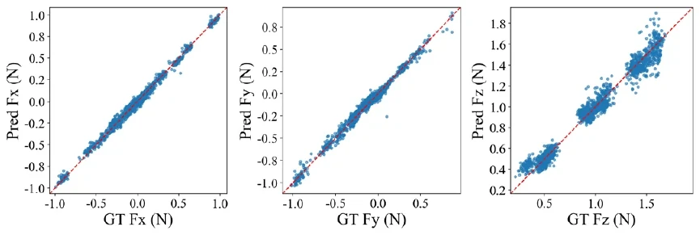
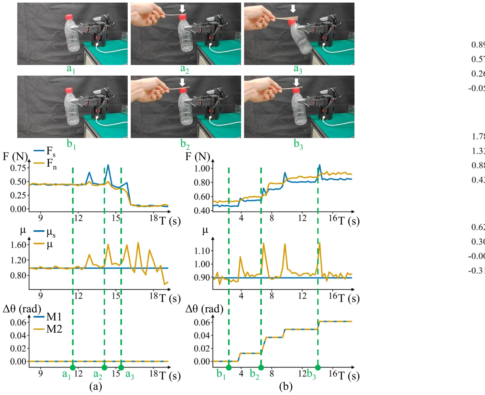
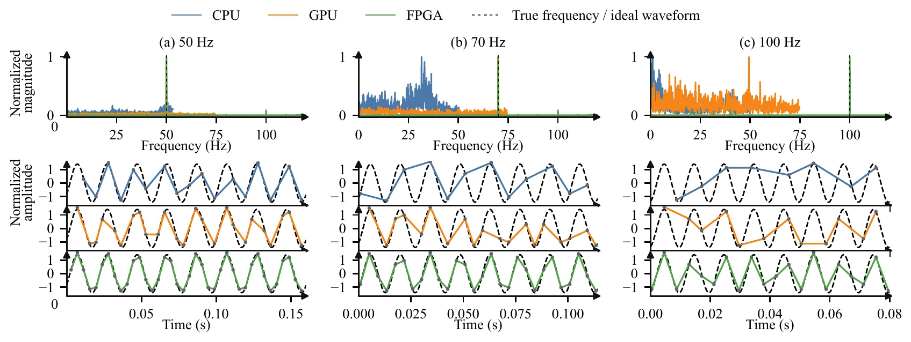

arXiv 2026 · Submitted to IEEE/ASME Transactions on Mechatronics
FasTac: A Curved Multispectral Vision-Based Tactile Sensor for High-Speed High-Precision 3D Shape and Force Perception
Huazhong University of Science and Technology

01 / Overview
Geometry, force, and speed in one curved fingertip.
FasTac combines single-sensor RGB-NIR imaging, boundary-prior 3D reconstruction, position-aware three-axis force estimation, and an FPGA image-to-normal-force pipeline for compact dexterous-hand integration.
Over-determined RGB-NIR photometric stereo
A fourth spectral observation improves surface-normal stability when curvature and contact occlusion weaken conventional RGB illumination.
Position-aware HyperForce
Dynamic convolution maps local three-dimensional displacement fields to normal and tangential forces under spatially nonuniform elastomer mechanics.
Deterministic tactile decoding
A streaming FPGA chain integrates normal inference, boundary-prior depth reconstruction, displacement quantization, and normal-force estimation.
02 / Sensor System
A compact RGB-NIR fingertip built for curved contact.
A light-guiding skeleton, multispectral LED flexible circuit, compliant gel skin, miniature RGB-IR camera, and onboard FPGA form a tightly integrated sensing stack.


03 / Method
From multispectral pixels to shape, displacement, and force.
FasTac joins pixel-wise normal inference, boundary-prior fast Poisson integration, marker-based tangential displacement, and HyperForce into a unified tactile perception pipeline.

01RGB-NIR acquisition
02Normal inference
03Boundary-prior depth
04HyperForce
Data & Calibration
Repeatable supervision on the curved sensing surface
A CNC platform synchronizes tactile images, indenter poses, and ATI force measurements. CAD alignment supplies dense geometric ground truth for normal and depth learning.

Edge Deployment
FPGA image-to-normal-force pipeline
The PS orchestrates image synchronization, buffering, control, and readout while the PL executes the latency-critical stream. At 150 MHz, the complete image-to-Fz path runs in 1.09 ms.

04 / Results
Fine geometry, three-axis force, and dynamic tactile output.
Experiments cover object-level reconstruction, force regression, friction-aware feedback grasping, and continuous vibration measurement across CPU, GPU, and FPGA platforms.

3D reconstruction
RGB-NIR sensing preserves strawberry pits, fingerprint ridges, and miniature component layouts.
Near-infrared illumination and the curved boundary prior reduce depth error from 0.2730 mm to 0.0415 mm.

Force estimation
Predicted forces align closely with six-axis reference measurements.
Component NMAE values are 2.37%, 2.41%, and 2.74% for Fx, Fy, and Fz.

Feedback grasping
Online three-axis force estimates stabilize a disturbed grasp.
Threshold crossings trigger grasp tightening, raise normal force, and return the contact state to the stable friction region.

Dynamic tactile sensing
The FPGA path resolves continuous contact dynamics up to 100 Hz.
At 70 Hz, GPU and FPGA recover 69.98 and 70.03 Hz. At 100 Hz, the FPGA detects 100.04 Hz while the slower software paths alias.
Latency
End-to-end image-to-Fz comparison
The FPGA energy value is derived from Vivado power estimates combined with scheduled RTL/HLS latency, rather than a board-level end-to-end power measurement.
05 / Demos
Contact-rich demonstrations from geometry to feedback.
The complete supplementary video and three focused clips use web-optimized copies of the final arXiv media.
Supplementary overview
FasTac: shape reconstruction, feedback grasping, and vibration measurement
Full 112-second demonstration corresponding to the arXiv ancillary video.
3D reconstruction
Multi-object curved-surface perception
Feedback grasping
Friction-aware closed-loop response
Vibration
High-speed normal-force sensing
06 / Citation
Cite the arXiv preprint.
FasTac is available as arXiv:2607.28416 in Robotics. Use the version-independent abstract link for stable access.
@misc{lu2026fastac,
title={FasTac: A Curved Multispectral Vision-Based Tactile Sensor for High-Speed High-Precision 3D Shape and Force Perception},
author={Lu, Xiaofan and Huang, Kaiji and Chen, Jiahui and Lin, Yuankai and Yang, Hua and Yin, Zhouping},
year={2026},
eprint={2607.28416},
archivePrefix={arXiv},
primaryClass={cs.RO},
url={https://arxiv.org/abs/2607.28416}
}